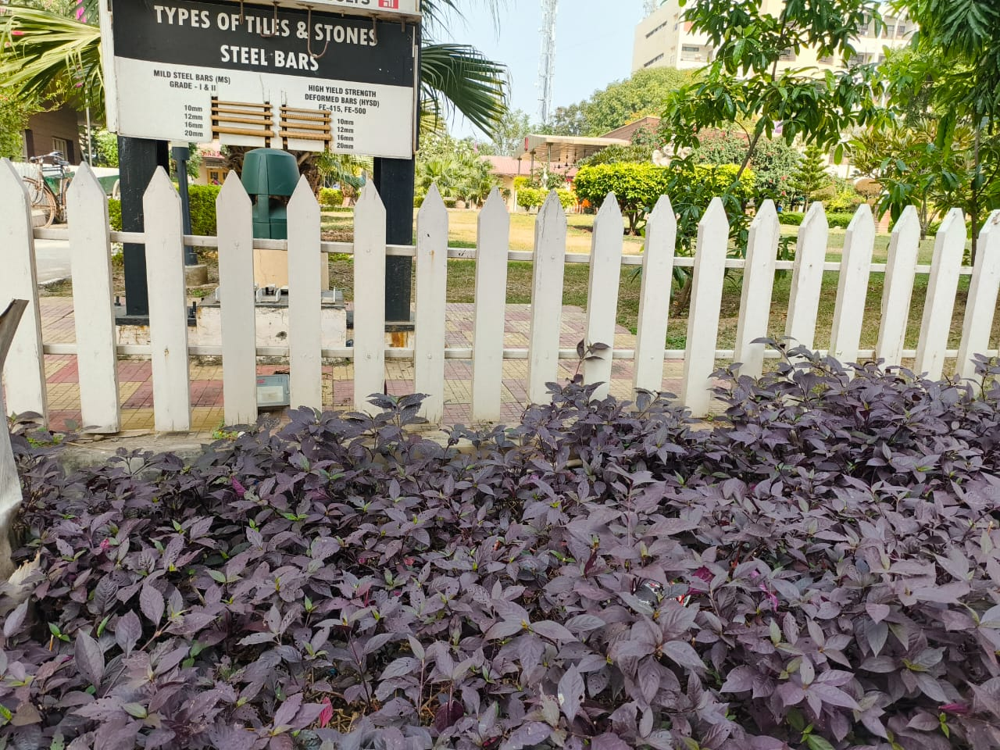
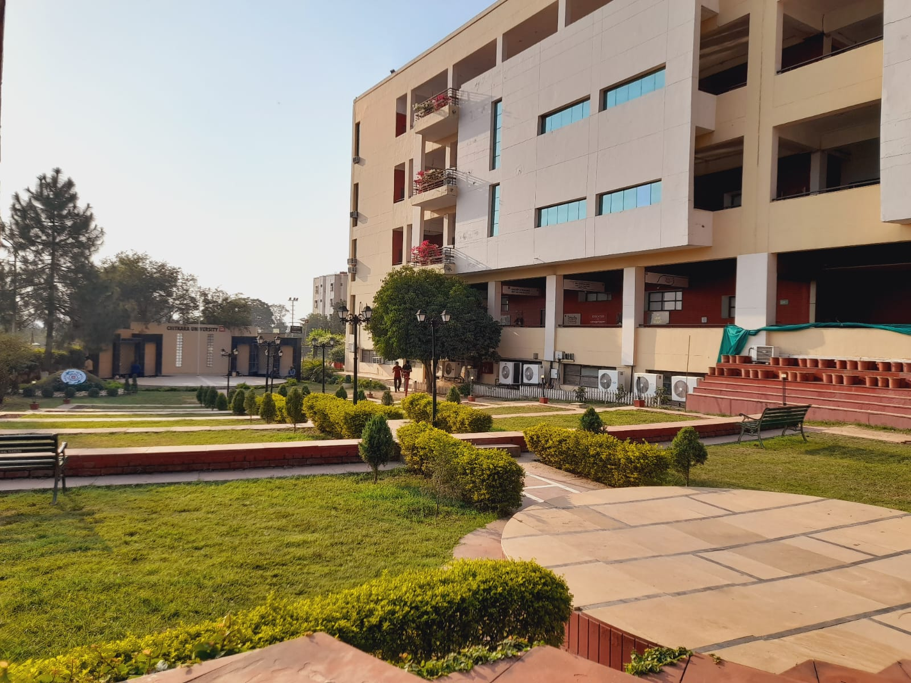
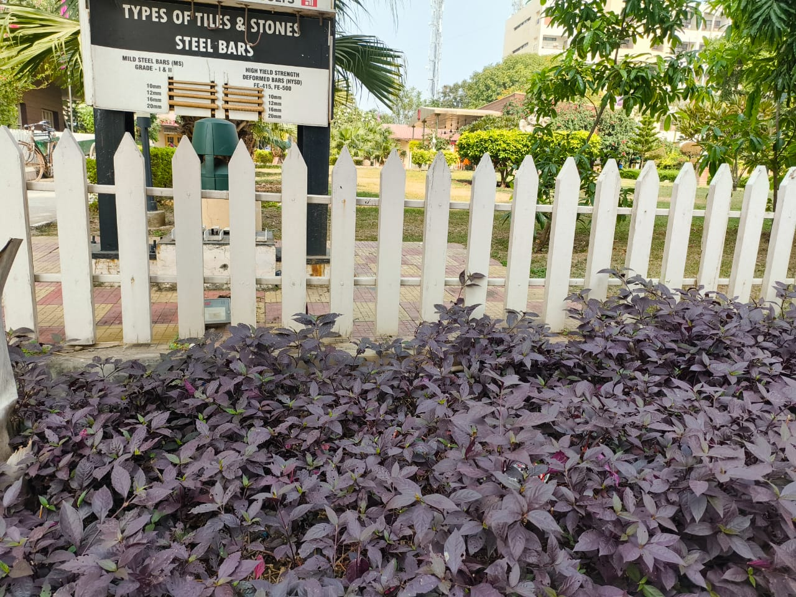
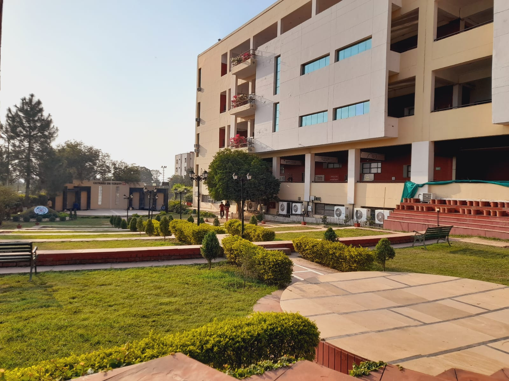

Chitkara University in Himachal Pradesh is well-regarded for its eco-friendly campus design, incorporating various green spaces and sustainable practices to promote an environmentally conscious atmosphere.
Here are some notable aspects of the university's environmental initiatives and green spaces:
 



The campus is designed to maximize green cover with landscaped gardens, lawns, and tree-lined pathways. This fosters a serene environment conducive to learning and relaxation.
The university employs sustainable waste management practices, such as waste segregation and
Renewable energy sources like solar panels contribute to reducing the campus's carbon footprint.
The campus is home to a variety of plants and trees, promoting biodiversity and contributing to cleaner air.
Efforts are made to preserve the natural flora and fauna of the region
Regular plantation drives are organized to further enhance green cover.
The institution encourages water conservation through rainwater harvesting systems.
Students actively participate in eco-awareness drives, environmental clubs, and projects that focus on sustainability.